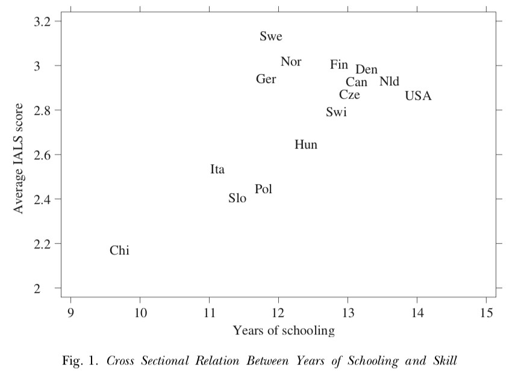
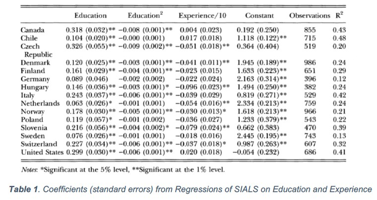
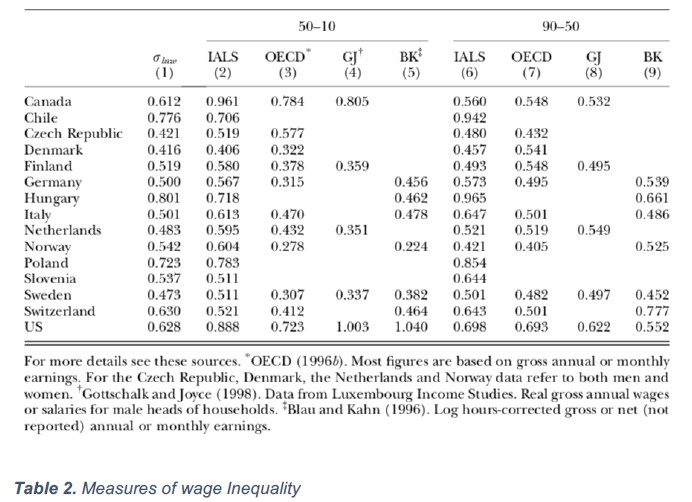
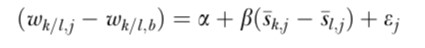
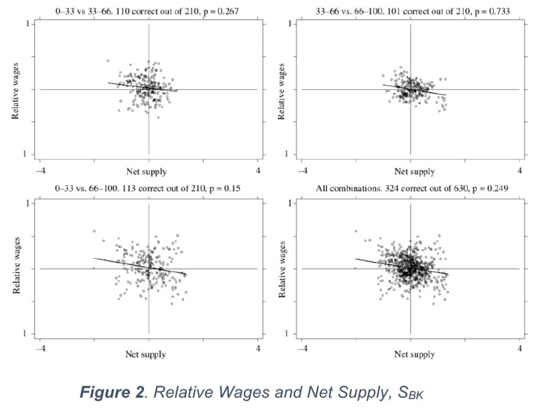
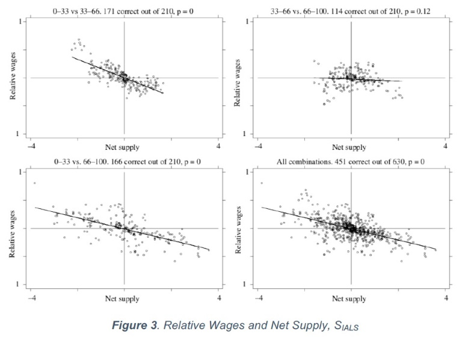

Explaining International Difference in Male Skill Wage Differentials by Differences in Demand and Supply of Skill
This article studies the hypothesis that wage differentials between skill groups across the world are reliable with the demand and supply framework.
There are two reasons that have been pointed out as the main causes of these differences:
- Differences in underlying demand and supply factors
- Differences in labor market institutions
Data
To collect comparable data about literacy skills of adult population in 20 countries it was used IALS (International Adult Literacy Survey), a questionnaire containing information about attitudes and behaviors.
The Relation between Skill, Education and Experience
The relation between the mean value of years of schooling and the average of IALS score in the various countries is represented in Figure 1. As we can see in this graph, the number of years of schooling and skill level, measured by SIALS, are positively correlated across countries.

According Table 1, despite the relation between skill level and years of schooling being positive in all the 15 countries, the slope of the skill-schooling profile varies across countries.

The relation between skill score and years of experience is significantly negative in 7 of the 15 countries. The dimension of this effect (contribution of the years of experience to skills acquisition) differs between countries.
Wage Inequality

Analyzing the first column of Table 2, which presents the standard deviations of log hourly wages in the data, we understand that wage inequality differs substantially between the 15 countries. Another factor that exposes a significant characteristic of wage inequality in the US is the distance between the 50th and 10th percentiles in log wages in column 2 of Table 2. The fact that this value is so high (0.888) shows that the wage inequality in the US is specially marked at the bottom when compared to other countries.
Method
The framework requires that workers are categorized in observable skill categories. Therefore, the workers of various countries are divided into three skill groups according to a skill index S in: low, intermediate and high. To compute the wage differential between skills group in country j relative to the wage differential between the same skills group in baseline country (b) Leuven used the following formula:

- w k/l,j defines the wage of skill group k relative to skill group l in country j.
- w k/l,b defines the wage of skill group k relative to skill group l in country b.
- sk,j-sl,j is the difference in relative net supply of skills groups k and l in country j.
- β<0, because according to the demand and supply model the larger relative net supply of a skill group, the lower will be the relative wages of that group.
Applying this competitive framework doesn’t mean that the author defends the view that demand and supply forces are the only determinants of wage differentials.
Demand and Supply Analysis
The analysis of the results was based in two skill measure systems:
- SBK – is based on a worldwide wage equation, that includes years of schooling and years of experience as skill determinants based on the information in the IALS data
- SIALS – uses IALS as direct skill measure
Results based on SBK
This analysis made the confrontation between the differences in skill wage differentials across countries and the information about net supply of various skill groups. Analyzing the results in Figure 2, we concluded that the demand and supply framework has little influence in explaining differences in skill wage inequality across countries.

Results based on SIALS
The results of the confront of skill wage differentials and net supply indexes of skill groups when applying SIALS are showed in Figure 3. The first three graphs show the relative wages against the relative net supply for the comparison of the lower third versus middle third, middle third versus upper third, and lower third versus upper third of skill distribution. The one comparing the middle and top of the skill distribution (on the top right panel) shows that there isn’t significant relation between our variables. Observing the last graph, we concluded that one third of the relative wages between skills groups across countries is justified by demand and supply framework.

With these results, we can see that the conclusion if relative wages are consistently explained by a demand and supply model depends on the skill measure that we choose to use. Another important fact to draw from this study is that the demand and supply explanation does a better job at clarifying relative wages at the bottom of the skill distribution.
Conclusion
Using a skill measure that only takes into account the number of years of schooling or experience is unsuitable for purposes of international comparisons. On the other hand, the same doesn’t happen with the skill measure that was created for this purpose. When using the direct skill measure, the demand and supply model is effective in explaining international differences in wage differentials between low and intermediate skilled workers and between low and high skilled workers. This method isn’t so successful in explaining the differences between intermediate and high skilled groups. One possible explanation for this is that the kind of cognitive skills measured by the IALS tests are not sufficient to secure a position at the highest part of the wage distribution. The author concluded that differences in skill wage differentials across countries are consistent with the demand and supply model of skill, but that doesn’t mean the findings indicate that demand and supply forces are the only relevant factors for explaining the differences in male wage inequality across countries.
Photo from: Unsplash
Original Article: Leuven, E., H. Oosterbeek, and H. Van Ophem (2004): “Explaining International Differences in Male Skill Wage Differentials by Differences in Demand and Supply of Skill”, Economic Journal, 114(495), pp. 466-486.